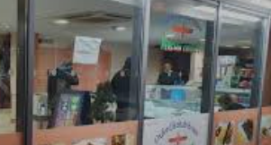

1. Oxford Kebab House
Oxford Kebab House is a popular spot for delicious and affordable kebabs, make sure to try their signature lamb doner FRIED UP!
Oxford Kebab House is a popular spot for delicious and affordable kebabs, make sure to try their signature lamb doner FRIED UP!
The Eagle and Child is a historic pub known for its literary connections, offering a cozy atmosphere and traditional British fare.

Gail's Bakery is a charming bakery and café that serves freshly baked pastries, bread, and excellent coffee.